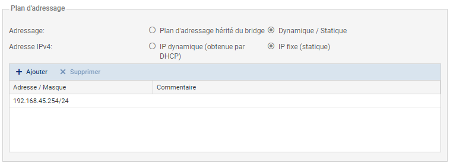
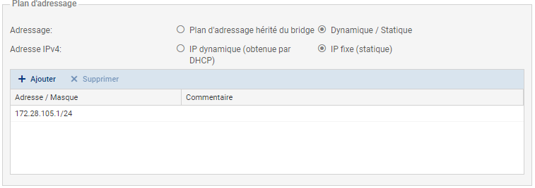
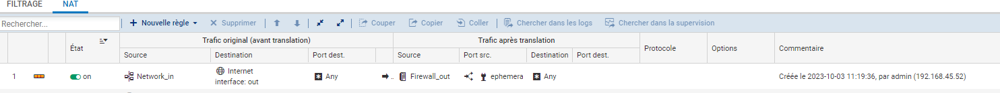
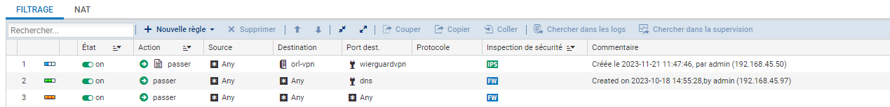
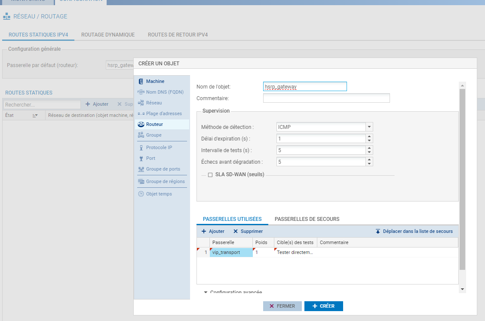
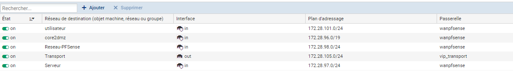

Configuration d'un firewall Stormshield (SN210)
Pour la configuration du firewall, nous l'avions d'abord réinitialisé en restant appuyer pendant plusieurs secondes sur le bouton qui se trouve à l'arrière du firewall.
- Pour configurer le pare-feu depuis son interface graphique, il faut se câbler avec un câble rj45 sur le port IN(LAN) du pare-feu
- Se rendre internet et taper dans l'URL l'interface du pare-feu qui est
https://10.0.0.254/admin - Arriver sur la page de connexion les informations de connexion sont admin et admin et vous pouvez également mettre la langue française en déroulant les options.
Configuration des interfaces réseau du firewall
- Sur l'interface du Stormshield, il faut se rentre dans
configurationet dansinterfaces. - En haut à droite de l'interface Stormshield, appuyer sur
écriturepour avoir des droits de modification. Sélectionner l'interfaceIN, dans l'onglet configuration générale: - Complétez les informations de la zone Plan d'adressage :
- Champ Adressage : sélectionnez Dynamique / Statique.
- Champ Adresse IPv4 : sélectionnez IP fixe (statique).
- Dans la grille : cliquez sur Ajouter et renseignez 192.168.45.254/24. (LAN) 
- Cliquez sur Appliquer pour valider.
Faire la même chose pour le OUT, et renseignez comme ip 172.28.105.1/24. (WAN) 
La connexion sera perdu, il faudra utiliser la nouvelle adresse IP pour vous connecter au firewall
Configuration du NAT
- Ouvrez le menu Configuration / Politique de sécurité / Filtrage et NAT. :
- Il ne faut pas créer de règle dans le menu Pass All, dans le menu déroulant sélectionner un Filter et renommer le
Sportludique_Orléans. - Ensuite, créer les règles de NAT. Cliquer sur la catégorie
NATet surNouvelle règleet surrègle simple. - Configurer comme sur l'image :

Configuration filtrage
- Même principe, se diriger vers la catégorie
filtrageet créer une nouvelle règle.  - Il est important que le niveau d'inspection soit en
Ne pas détéctercar il se pourrait que la protection antivirus de Stormshield bloque les requêtes. - La première règle autoriser tout le trafic sortant depuis n'importe quel port source vers n'importe quel port destination sauf le port de destination, qui doit être le port DNS.
- La deuxième autorise tout le trafic sortant sans aucune restriction.
Configuration des routes statiques
- Création de la passerelle par défaut(routeur):
- Toujours en mode écriture, cliquer sur l'icone à droite de la listbox.
- Vous serez alors dans le menu
Créer un objet. - Il faut créer une
machine, nom de l'objet à mettrevip_transportip : 172.28.105.254 et cliquer sur créer(la vip est utilisées pour la redondance de connexion car nous utilisons le protocole hsrp(protocole de redondance)). - Se diriger vers
routeurlenom de l'objetesthsrp_gatewaypuisdans passerelles utilisées, cliquer sur ajouter.  - Dans la catégorie
passerelleindiquer la machine créer plus tôt qui correspondont à la VIP (vip_transport). - Création des routes : cliquer sur ajouter et rajouter ces routes : 